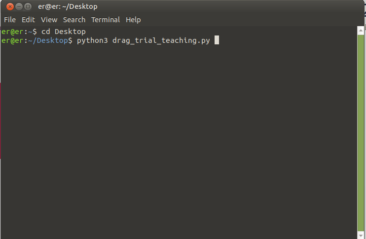
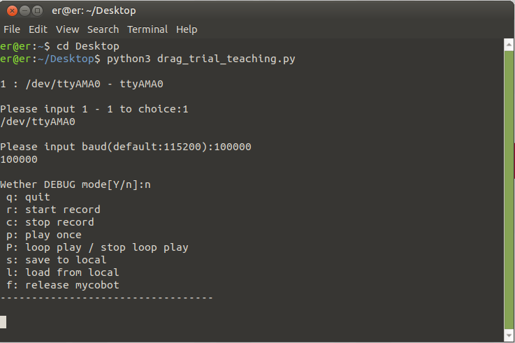
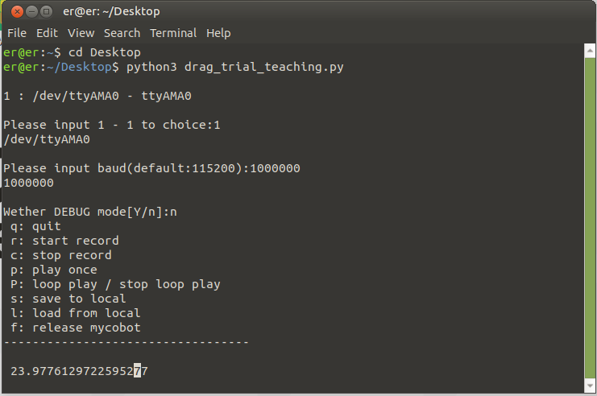
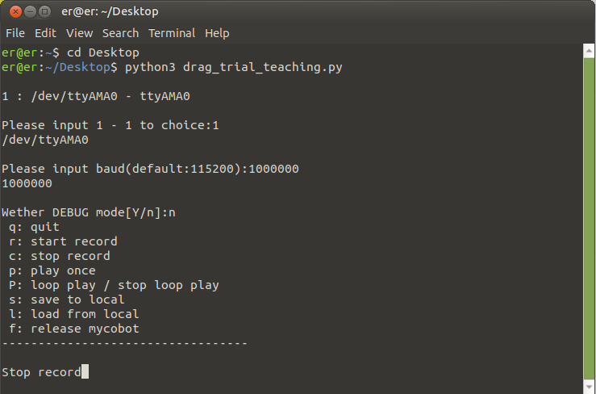

Implement drag teaching
Applicable devices
- myCobot 280 Pi
- myCobot 320 Pi
- mechArm 270 Pi
Operation steps
Step 1: Atom burns the latest version of atomMain.
Step 2: Create a new Python file named *.py on the desktop, copy the following code into it and save it.
Note: The file is named: drag_trial_teaching.py.
import time
import os
import sys
import termios
import tty
import threading
import json
import serial
import serial.tools.list_ports
from pymycobot.mycobot import MyCobot
port: str
mc: MyCobot
sp: int = 80
def setup():
print("")
global port, mc
plist = list(serial.tools.list_ports.comports())
idx = 1
for port in plist:
print("{} : {}".format(idx, port))
idx += 1
_in = input("\nPlease input 1 - {} to choice:".format(idx - 1))
port = str(plist[int(_in) - 1]).split(" - ")[0].strip()
print(port)
print("")
baud = 115200
_baud = input("Please input baud(default:115200):")
try:
baud = int(_baud)
except Exception:
pass
print(baud)
print("")
DEBUG = False
f = input("Wether DEBUG mode[Y/n]:")
if f in ["y", "Y", "yes", "Yes"]:
DEBUG = True
# mc = MyCobot(port, debug=True)
mc = MyCobot(port, baud, debug=DEBUG)
class Raw(object):
"""Set raw input mode for device"""
def __init__(self, stream):
self.stream = stream
self.fd = self.stream.fileno()
def __enter__(self):
self.original_stty = termios.tcgetattr(self.stream)
tty.setcbreak(self.stream)
def __exit__(self, type, value, traceback):
termios.tcsetattr(self.stream, termios.TCSANOW, self.original_stty)
class Helper(object):
def __init__(self) -> None:
self.w, self.h = os.get_terminal_size()
def echo(self, msg):
print("\r{}".format(" " * self.w), end="")
print("\r{}".format(msg), end="")
class TeachingTest(Helper):
def __init__(self, mycobot) -> None:
super().__init__()
self.mc = mycobot
self.recording = False
self.playing = False
self.record_list = []
self.record_t = None
self.play_t = None
def record(self):
self.record_list = []
self.recording = True
def _record():
start_t = time.time()
while self.recording:
angles = self.mc.get_angles()
if angles:
self.record_list.append(angles)
time.sleep(0.1)
print("\r {}".format(time.time() - start_t), end="")
self.echo("Start recording.")
self.record_t = threading.Thread(target=_record, daemon=True)
self.record_t.start()
def stop_record(self):
if self.recording:
self.recording = False
self.record_t.join()
self.echo("Stop record")
def play(self):
self.echo("Start play")
for angles in self.record_list:
# print(angles)
self.mc.send_angles(angles, 80)
time.sleep(0.1)
self.echo("Finish play")
def loop_play(self):
self.playing = True
def _loop():
len_ = len(self.record_list)
i = 0
while self.playing:
idx_ = i % len_
i += 1
self.mc.send_angles(self.record_list[idx_], 80)
time.sleep(0.1)
self.echo("Start loop play.")
self.play_t = threading.Thread(target=_loop, daemon=True)
self.play_t.start()
def stop_loop_play(self):
if self.playing:
self.playing = False
self.play_t.join()
self.echo("Stop loop play.")
def save_to_local(self):
if not self.record_list:
self.echo("No data should save.")
return
with open(os.path.dirname(__file__) + "/record.txt", "w") as f:
json.dump(self.record_list, f, indent=2)
self.echo("save dir: {}".format(os.path.dirname(__file__)))
def load_from_local(self):
with open(os.path.dirname(__file__) + "/record.txt", "r") as f:
try:
data = json.load(f)
self.record_list = data
self.echo("Load data success.")
except Exception:
self.echo("Error: invalid data.")
def print_menu(self):
print(
"""\
\r q: quit
\r r: start record
\r c: stop record
\r p: play once
\r P: loop play / stop loop play
\r s: save to local
\r l: load from local
\r f: release mycobot
\r----------------------------------
"""
)
def start(self):
self.print_menu()
while not False:
with Raw(sys.stdin):
key = sys.stdin.read(1)
if key == "q":
break
elif key == "r": # recorder
self.record()
elif key == "c": # stop recorder
self.stop_record()
elif key == "p": # play
self.play()
elif key == "P": # loop play
if not self.playing:
self.loop_play()
else:
self.stop_loop_play()
elif key == "s": # save to local
self.save_to_local()
elif key == "l": # load from local
self.load_from_local()
elif key == "f": # free move
self.mc.release_all_servos()
self.echo("Released")
else:
print(key)
continue
if __name__ == "__main__":
setup()
recorder = TeachingTest(mc)
recorder.start()
Step 3: Open the terminal (shortcut key CTRL+ALT+t) and enter the following command:
cd Desktop
python3 drag_trial_teaching.py

Step 4: Press Enter and the command Please input 1 - 1 to choice: will appear. Enter 1 and press Enter.。

Step 5: Enter the corresponding baud rate and press Enter.
- myCobot 280-Pi：1000000
- myCobot 320-Pi：115200

Step 6: Do you want to view the BAUD? Enter Y/N and press Enter.

Step 7: You can now start dragging the robot arm.
- Type q on the keyboard to exit this program
- Type r on the keyboard to start recording
r is entered here

Step 8: Input c on the keyboard to stop recording

Step 9: Input p on the keyboard to play once.

Input P to play in a loop*
Input q to terminate the loop and exit the program*
Input f to release each joint of the robot arm (can be used to stop the robot arm from moving and each joint is locked)*